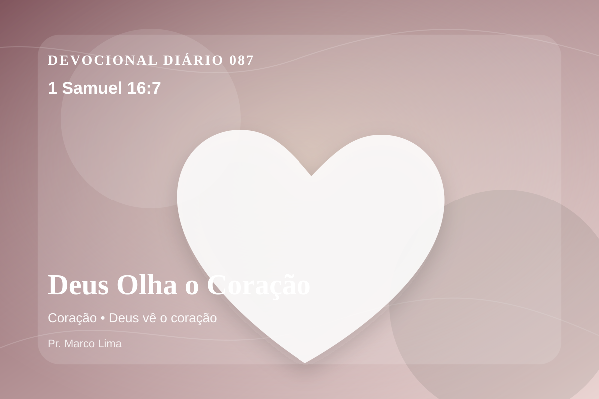

Deus Olha o Coração
Mas o Senhor disse a Samuel: Não atentes para a sua aparência, nem para a grandeza da sua estatura, porque eu o rejeitei; porque o Senhor não vê como vê o homem, pois o homem olha para o que está diante dos olhos, porém o Senhor olha para o coraçao.
Reflexão
1 Samuel 16:7 nos lembra que a fé verdadeira começa quando paramos de fugir de Deus e ouvimos Sua voz com humildade. No dia 87 do plano anual, o tema de coração deve levar você a olhar para Cristo, não apenas para si mesmo. Este tema aponta para a maneira como Deus forma o coração do Seu povo por meio da Palavra. A aplicação correta não nasce de frases soltas, mas de uma leitura reverente, contextual e obediente do texto bíblico.
O texto mostra que a maior necessidade humana não é apenas alívio para problemas, mas reconciliação com Deus por meio de Jesus, o Filho que morreu e ressuscitou. A reflexão cristã não termina em pensamento positivo; ela conduz ao Senhorio de Jesus, à cruz, à ressurreição e à nova vida que o Espírito Santo produz no coração.
Aprenda esta verdade com simplicidade: Deus não veio apenas ajustar alguns hábitos, mas resgatar a pessoa inteira. O pecado separa, engana e endurece; a graça de Cristo perdoa, reconcilia e ensina um novo caminho. Quem crê em Jesus não recebe licença para continuar igual, mas poder para nascer de novo e viver como filho de Deus.
Este é o evangelho: a salvação não nasce do desempenho humano, mas da obra perfeita de Cristo. Ele tomou sobre Si a culpa do pecado, venceu a morte e chama cada pessoa a responder com arrependimento e fé.
Arrepender-se é parar de justificar o pecado e começar a concordar com Deus. É reconhecer: eu preciso de perdão, preciso de uma nova vida, preciso do Salvador.
A salvação está em Jesus. Ele é o caminho, a verdade e a vida. Se você ainda não se entregou a Cristo, faça isso hoje: confesse seus pecados, creia no Salvador e siga-O com sinceridade.
Aplicação Prática
- Leia 1 Samuel 16:7 lentamente e destaque uma palavra ou expressão central do texto.
- Confesse a Deus um pecado, resistência ou frieza espiritual que esta Palavra revelou.
- Declare sua fé em Jesus Cristo e pratique hoje uma atitude concreta de arrependimento e obediência.
Para Orar
Senhor Deus, eu recebo a Tua Palavra em 1 Samuel 16:7 com reverência. Reconheço que preciso de arrependimento, perdão e nova vida. Creio que Jesus Cristo morreu pelos meus pecados e ressuscitou para me salvar. Lava meu coração, governa minha vida e conduz-me em obediência simples ao Teu evangelho. Em nome de Jesus. Amém.
{kind=link}